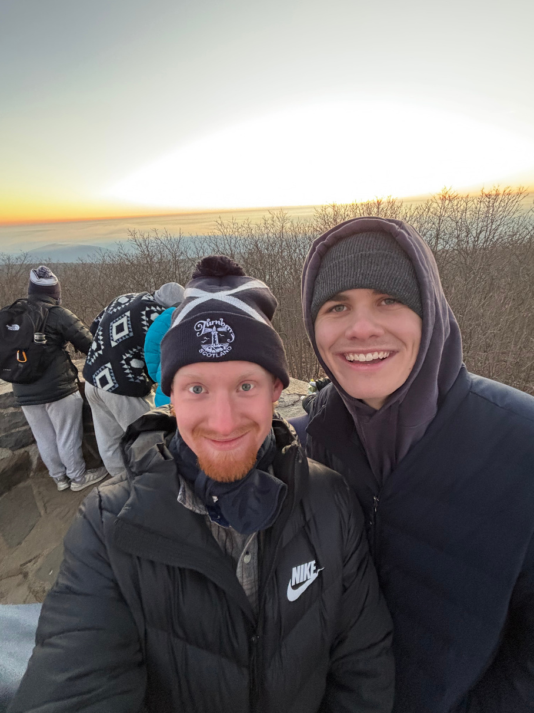

Journal #001 · August 2026
Preparing for Prishtina
Leaving home, stepping into a new culture, and trusting God with the unknown.
Read entry →LONGER REFLECTIONS
A record of what I am learning, seeing, and thinking throughout my time in Kosovo.

Journal #001 · August 2026
Leaving home, stepping into a new culture, and trusting God with the unknown.
Read entry →